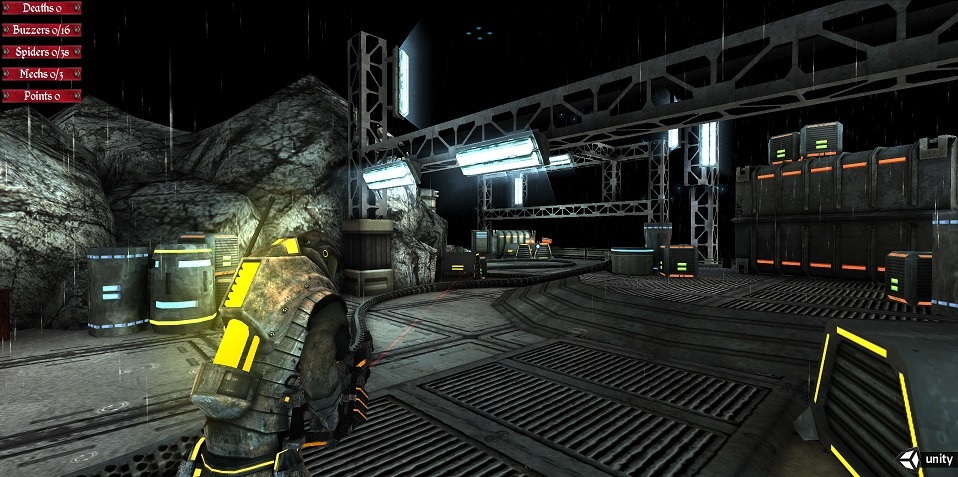

Unity3D AngryBots - First Person Shooter

Yet another AngryBots game !!
This is a modified version of the popular Unity3D AngryBots Demo Game.
The original version,created to show the awesome power of the Unity3d platform.(http://www.unity3d.com), was written as a third person shooter game with the camera looking down from above.
The original top down, third person view provided one way of checking out the great environment created by the Unity3d team.
My, first person version of the game provides an alternate, closer look at this environment and also, I think, a more intuitive navigation.
My modified version has the following changes.
- new start scene
- new option menu with options to change difficulty level, control sensitivity and others
- a combination of first and third person camera view
- health bar over player and each enemy
- navigation
- camera collision detection
- new end scene
http://forum.unity3d.com/threads/219056-Yet-another-AngryBots-Clone
The original version can be found at
http://unity3d.com/gallery/demos/live-demos#angrybots
The Story and GamePlay
This is pretty simpleYou land on a facility atop an asteroid.
The facility has been taken over by robots.
You need to destroy the robots and activate a number of computer hubs.
There are three type of robots - spiders, buzzers, and mechs.
To destroy them just point and shoot.
As you move around you will notice some floors have a red line on them. If you follow the line you will find that it ends with a locked door on one side and a computer hub on the other side. To open the door follow the line to the computer hub and stand close to it for a few seconds. This would activate the computer hub and turn the redline to green. Follow the line back to the door and you will find that it will open when you get close to it.
Activating the last computer hub ends the game.
Navigation
- to move left, right, forward or back, use left, right, up or down arrow keys or the "a", "d","w","s" keys
- to look around and point the gun, just move the mouse
- to fire the gun press the left mouse button
- to pause game press the enter or escape key.
Android version
A free android version for phones and tablets is also available.This is in Google Play Store at the following location
https://play.google.com/store/apps/details?id=com.cw.angryBots.fps
The game plays well on tablets and newer generations phones with slightly larger resolutions (640�960 and above) screens.
Comment Box is loading comments...